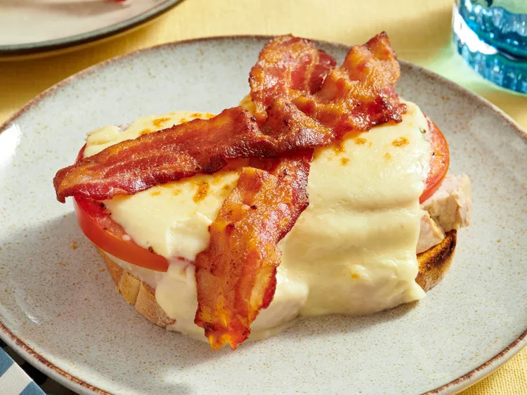

Original Hot Brown

Photo by Allrecipes / Qi Ai
Description
A hot brown sandwich is a broiled, open-face turkey, bacon, tomato, and cheese sandwich. The recipe originally came from the Brown Hotel in Louisville, KY. I have altered it based on how I have had it served in restaurants in Louisville. This is a good way to use leftover turkey from Thanksgiving, and my husband looks forward to it every year.
Ingredients
Sauce:
- 1/2 cup butter
- 1/4 cup all-purpose flour
- 3 cups milk
- 6 tablespoons grated Parmesan cheese
- 1 egg, beaten
- 2 tablespoons heavy cream
Sandwiches:
- 8 slices white bread, toasted
- 2 pounds sliced roasted turkey
- 1 tomato, thinly sliced
- salt and pepper to taste
- 1/4 cup grated Parmesan cheese
- 8 slices crispy bacon
Steps
- Make sauce: Melt butter in a saucepan over medium heat. Whisk in flour; cook and stir until it begins to brown slightly. Gradually whisk in milk so that no lumps form; bring to a boil, stirring constantly. Mix in Parmesan cheese and stir in beaten egg to thicken; remove from heat and stir in cream.
- Preheat the oven's broiler.
- Make sandwiches: For each hot brown, place two slices toast into the bottom of an individual-sized casserole dish. Cover with a liberal amount of roasted turkey and tomato slices. Season with salt and pepper; spoon sauce over top of each one and sprinkle with Parmesan cheese.
- Place the dishes under the preheated broiler and cook until speckled brown on top, about 5 minutes. Remove and arrange two slices bacon in a cross shape on top of each sandwich.
Home